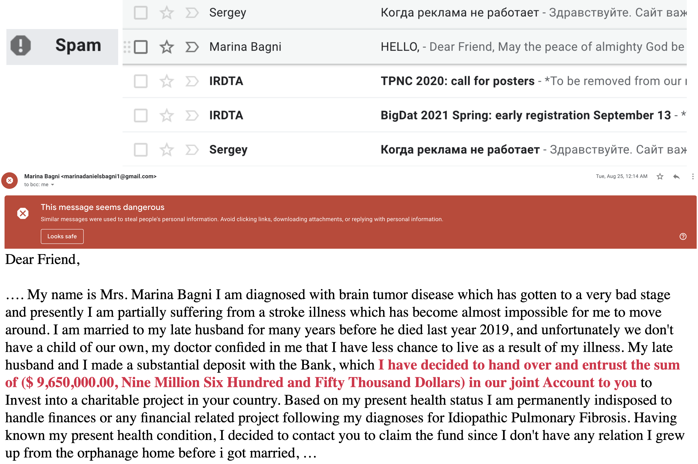
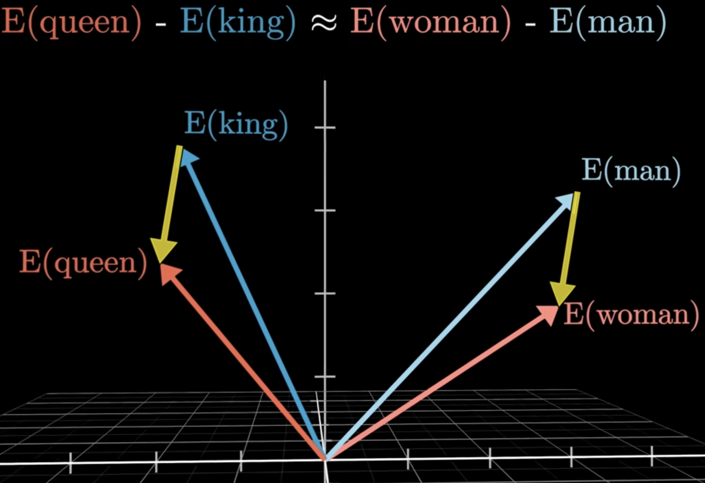
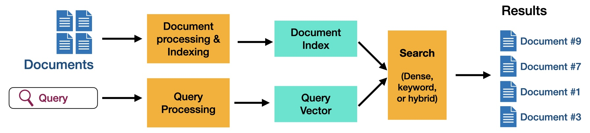
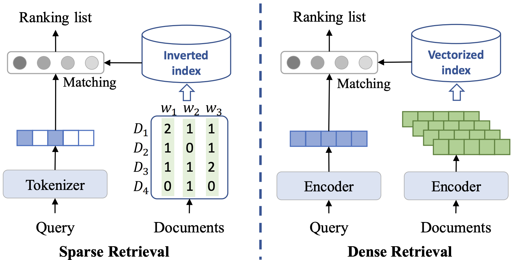
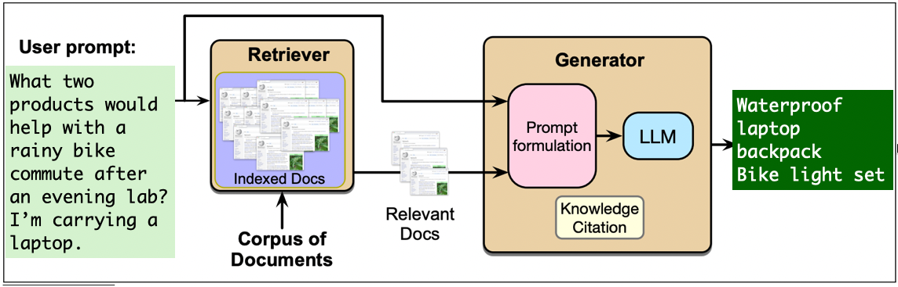

import numpy as np
import pandas as pd
from IPython.display import display
from sklearn.feature_extraction.text import CountVectorizer, TfidfVectorizer
from sklearn.metrics.pairwise import cosine_similarity
pd.set_option("display.max_colwidth", 120)Chapter 17: Natural Language Processing
Learning outcomes
By the end of this chapter, you should be able to:
- Explain why ambiguity, context, and vocabulary mismatch make language difficult to represent computationally.
- Construct bag-of-words and TF–IDF representations and interpret what information they preserve and discard.
- Use pretrained word embeddings to explore similarity and analogies, and explain how social biases can be encoded in their geometry.
- Compare sparse and dense retrieval and use text embeddings with cosine similarity to rank documents for a query.
- Explain next-token prediction intuitively and distinguish pretraining, post-training, and prompting.
- Explain why prompting cannot supply missing knowledge and how retrieval-augmented generation (RAG) addresses this limitation.
- Implement and inspect a basic RAG pipeline, and diagnose failures in its retrieval, context, generation, or knowledge base.
Imports
What is natural language processing?
Before arriving at this page today, you may already have interacted with several systems that process language. Perhaps your phone completed a sentence, an email service filtered spam, a search engine interpreted a query, or a chatbot answered a question. These tools feel quite different, but they all face the same basic challenge: how can a computer do something useful with human language?

A spam filter classifies incoming messages.

A language model helps a speech recognizer choose the more plausible sequence of words.
Natural language processing (NLP) is the area of artificial intelligence concerned with analyzing and generating human language. NLP applications include search, translation, sentiment analysis, document classification, summarization, speech recognition, information extraction, and conversational assistants.

At first, this might sound like a matter of programming enough vocabulary and grammar rules. Language, however, rarely follows a tidy collection of rules.
Why is language difficult?
Consider the following sentence. To what does it refer?

A human reader looks beyond the pronoun. We use the surrounding conversation, common sense, and knowledge of the world. Even then, we sometimes need to ask for clarification.
Ambiguity is not limited to pronouns. Consider these genuine-style ambiguous newspaper headlines:
KICKING BABY CONSIDERED TO BE HEALTHY
MILK DRINKERS ARE TURNING TO POWDER
Why are they funny? In the first headline, kicking can describe the baby or an action performed on the baby. In the second, turning to can mean choosing or transforming into. The intended meanings are ordinary; the unintended interpretations are surprising.
The words themselves have not changed. What changes is how we connect them.
Context changes meaning
What would you put in each blank?
I went to the bank to deposit some ________.
I sat on the bank of the ________.
The nearby words make bank mean different things. Language also permits the reverse problem: two sentences can express similar ideas with few words in common. The assignment deadline passed while I was ill and I was sick when my homework was due are likely asking about the same policy. A useful NLP system needs to handle both exact wording and paraphrases.
This observation will matter throughout the chapter. Search based only on matching words may miss a relevant passage, while a model that focuses only on broad similarity may overlook an important exact term.
From language to numbers
Machine learning models operate on numbers, not directly on words. Before a model can classify, retrieve, or generate text, the system must decide how to represent language numerically. That representation determines which similarities and differences the model can notice.
No representation captures every aspect of meaning. The right question is therefore not “Does the computer truly understand this sentence?” but “Does this representation retain the information needed for our task?” We begin with representations based on word counts and then move to embeddings designed to capture some aspects of meaning.
Representing text
Sparse representations: bag-of-words and TF–IDF
In Chapter 6, we used bag-of-words features to represent a document by the words it contains. There is one feature for each term in the vocabulary, and the feature value records how often that term occurs. Because a document contains only a small fraction of the full vocabulary, most values are zero. Bag-of-words is therefore called a sparse representation.
We will explore sparse and dense representations using a small campus-survival store. It gives us queries that depend on ordinary meaning, such as I want to study without hearing the conversation at the next table, as well as queries containing exact specifications or model numbers, such as 20,000 mAh and HUB-7X.
A campus-survival catalog
Each row below is a document that a shopping search system might return. Most rows describe products that could be useful to university students. The collection also contains two informational articles. These distractors will help us see the difference between matching related words and identifying what a shopper probably wants.
The Sony headphones are included as a familiar example, not as a product endorsement. The noise-cancellation and battery-life details come from the manufacturer’s specifications.
products = pd.DataFrame(
[
("C001", "Sony WH-1000XM6 headphones", "Over-ear wireless headphones with active noise cancellation and up to 30 hours of battery life. Useful for studying in noisy spaces."),
("C002", "Pocket power bank", "Portable 20,000 mAh battery with two USB-C ports. Recharges mobile devices several times when wall power is unavailable."),
("C003", "Waterproof laptop backpack", "Rain-resistant backpack with sealed zippers and a padded compartment for a 16-inch laptop. Keeps electronics and notes dry during wet commutes."),
("C004", "Sunrise alarm clock", "Gradually brightens the room before the alarm sounds. Designed to make waking up on dark winter mornings easier."),
("C005", "Ergonomic keyboard", "Split keyboard with a padded wrist rest. Designed to reduce wrist strain during long typing and programming sessions."),
("C006", "Laptop stand", "Raises a laptop screen to eye level and folds flat for carrying. An external keyboard is recommended for prolonged use."),
("C007", "USB-C hub", "The HUB-7X adds HDMI, Ethernet, an SD-card reader, and three USB ports to laptops with limited connections."),
("C008", "Insulated travel mug", "Leak-resistant 500 mL mug that keeps coffee hot for eight hours. Fits standard campus cup holders."),
("C009", "Pomodoro timer", "Distraction-free timer with 25- and 50-minute study modes. It does not connect to a phone."),
("C010", "Bike-light set", "Rechargeable front and rear bicycle lights with weather-resistant housings. Improves visibility when commuting after dark."),
("C011", "Mini rice cooker", "Compact rice cooker suitable for a dormitory kitchen. Makes two servings and switches automatically to warming mode."),
("C012", "White-noise machine", "Produces fan, rain, and ambient sounds without playing music. Intended for sleep or concentration."),
("C013", "Study-skills article", "An article describing ways to concentrate in a busy library."),
("C014", "Vancouver weather guide", "An article about preparing for wet and dark winter commutes in Vancouver."),
],
columns=["product_id", "title", "text"],
)
products["item_type"] = np.where(
products["title"].str.contains("article|guide", case=False),
"article",
"product",
)
products| product_id | title | text | item_type | |
|---|---|---|---|---|
| 0 | C001 | Sony WH-1000XM6 headphones | Over-ear wireless headphones with active noise cancellation and up to 30 hours of battery life. Useful for studying ... | product |
| 1 | C002 | Pocket power bank | Portable 20,000 mAh battery with two USB-C ports. Recharges mobile devices several times when wall power is unavaila... | product |
| 2 | C003 | Waterproof laptop backpack | Rain-resistant backpack with sealed zippers and a padded compartment for a 16-inch laptop. Keeps electronics and not... | product |
| 3 | C004 | Sunrise alarm clock | Gradually brightens the room before the alarm sounds. Designed to make waking up on dark winter mornings easier. | product |
| 4 | C005 | Ergonomic keyboard | Split keyboard with a padded wrist rest. Designed to reduce wrist strain during long typing and programming sessions. | product |
| 5 | C006 | Laptop stand | Raises a laptop screen to eye level and folds flat for carrying. An external keyboard is recommended for prolonged use. | product |
| 6 | C007 | USB-C hub | The HUB-7X adds HDMI, Ethernet, an SD-card reader, and three USB ports to laptops with limited connections. | product |
| 7 | C008 | Insulated travel mug | Leak-resistant 500 mL mug that keeps coffee hot for eight hours. Fits standard campus cup holders. | product |
| 8 | C009 | Pomodoro timer | Distraction-free timer with 25- and 50-minute study modes. It does not connect to a phone. | product |
| 9 | C010 | Bike-light set | Rechargeable front and rear bicycle lights with weather-resistant housings. Improves visibility when commuting after... | product |
| 10 | C011 | Mini rice cooker | Compact rice cooker suitable for a dormitory kitchen. Makes two servings and switches automatically to warming mode. | product |
| 11 | C012 | White-noise machine | Produces fan, rain, and ambient sounds without playing music. Intended for sleep or concentration. | product |
| 12 | C013 | Study-skills article | An article describing ways to concentrate in a busy library. | article |
| 13 | C014 | Vancouver weather guide | An article about preparing for wet and dark winter commutes in Vancouver. | article |
Bag-of-words in code
CountVectorizer learns the vocabulary and creates the count matrix. The rows represent products and the columns represent terms.
bow = CountVectorizer()
product_bow = bow.fit_transform(products["text"])
print("Shape:", product_bow.shape)
print("Number of nonzero entries:", product_bow.nnz)
selected_terms = ["battery", "laptop", "rain", "study", "usb", "wrist"]
pd.DataFrame(
product_bow.toarray(),
index=products["title"],
columns=bow.get_feature_names_out(),
)[selected_terms]Shape: (14, 173)
Number of nonzero entries: 231| battery | laptop | rain | study | usb | wrist | |
|---|---|---|---|---|---|---|
| title | ||||||
| Sony WH-1000XM6 headphones | 1 | 0 | 0 | 0 | 0 | 0 |
| Pocket power bank | 1 | 0 | 0 | 0 | 1 | 0 |
| Waterproof laptop backpack | 0 | 1 | 1 | 0 | 0 | 0 |
| Sunrise alarm clock | 0 | 0 | 0 | 0 | 0 | 0 |
| Ergonomic keyboard | 0 | 0 | 0 | 0 | 0 | 2 |
| Laptop stand | 0 | 1 | 0 | 0 | 0 | 0 |
| USB-C hub | 0 | 0 | 0 | 0 | 1 | 0 |
| Insulated travel mug | 0 | 0 | 0 | 0 | 0 | 0 |
| Pomodoro timer | 0 | 0 | 0 | 1 | 0 | 0 |
| Bike-light set | 0 | 0 | 0 | 0 | 0 | 0 |
| Mini rice cooker | 0 | 0 | 0 | 0 | 0 | 0 |
| White-noise machine | 0 | 0 | 1 | 0 | 0 | 0 |
| Study-skills article | 0 | 0 | 0 | 0 | 0 | 0 |
| Vancouver weather guide | 0 | 0 | 0 | 0 | 0 | 0 |
The table makes both the strength and limitation of bag-of-words visible. It preserves exact terms such as usb and battery, which can be useful when a query names a specification. However, it treats rain in the waterproof-backpack description and rain in the white-noise-machine description as the same feature. One refers to weather protection and the other to a sound, but the count matrix does not represent that difference in meaning.
We have not removed stop words. Preprocessing must be chosen for the application rather than applied mechanically.
TF–IDF in code
Raw counts can give too much influence to terms that appear throughout a collection. Term frequency–inverse document frequency (TF–IDF) gives more weight to a term when it occurs in a particular document but is uncommon across the collection. In simplified form,
\[\operatorname{tfidf}(t,d)=\operatorname{tf}(t,d)\log\left(\frac{N}{\operatorname{df}(t)}\right)\]
where \(\operatorname{tf}(t,d)\) measures the frequency of term \(t\) in document \(d\), \(\operatorname{df}(t)\) is the number of documents containing the term, and \(N\) is the number of documents. Scikit-learn uses a smoothed version and normalizes each resulting document vector.
tfidf = TfidfVectorizer()
product_tfidf = tfidf.fit_transform(products["text"])
tfidf_table = pd.DataFrame(
product_tfidf.toarray(),
index=products["title"],
columns=tfidf.get_feature_names_out(),
)
tfidf_table.loc[
["Sony WH-1000XM6 headphones", "White-noise machine", "Study-skills article"],
["concentrate", "concentration", "library", "noise", "study", "studying"],
].round(2)| concentrate | concentration | library | noise | study | studying | |
|---|---|---|---|---|---|---|
| title | ||||||
| Sony WH-1000XM6 headphones | 0.00 | 0.00 | 0.00 | 0.24 | 0.0 | 0.24 |
| White-noise machine | 0.00 | 0.29 | 0.00 | 0.00 | 0.0 | 0.00 |
| Study-skills article | 0.38 | 0.00 | 0.38 | 0.00 | 0.0 | 0.00 |
TF–IDF changes the weights, but it is still a lexical representation: words must match vocabulary terms. It does not know that concentrate and concentration are related, or that not hearing a nearby conversation may call for noise-cancelling headphones. This is the vocabulary mismatch problem.
Dense representations: word embeddings
A bag-of-words vocabulary gives happy and joyful separate coordinates. Nothing in those coordinates tells a model that the words are related. Word embeddings take a different approach: they represent each word with a short, dense vector and try to place words used in similar contexts near one another.
This idea is often summarized by the distributional hypothesis:
You shall know a word by the company it keeps. — J. R. Firth, 1957
Suppose you did not know the word glorp, but repeatedly saw sentences such as The movie was glorp and moving, What a delightful, glorp story, and We loved the glorp ending. The surrounding words provide clues about how glorp is being used. Word-embedding algorithms learn from this kind of co-occurrence at a much larger scale.
word2vec is a family of algorithms for learning word embeddings by predicting words from their surrounding context, or surrounding words from a target word. We will not study its training algorithm here. Instead, we will explore what a pretrained word2vec model learned.
Exploring pretrained word2vec embeddings
The following examples use vectors from the historical word2vec-google-news-300 model, which was trained on roughly 100 billion words from Google News. The complete model contains about three million words and phrases and requires more than 1.5 GB of storage. To keep the chapter reproducible, this repository contains a 410-word subset chosen for the demonstrations below. It contains the original 300-dimensional vectors, but it is not a general-purpose vocabulary.
Phrases in this vocabulary use underscores, as in computer_programmer. Because these embeddings were learned from news text rather than written by hand, their geometry reflects statistical patterns in that corpus.
from gensim.models import KeyedVectors
word_vectors = KeyedVectors.load("data/google-news-word2vec-subset.kv")
print(f"Vocabulary in course subset: {len(word_vectors):,} words and phrases")
print(f"Dimensions per word: {word_vectors.vector_size}")
word_vectors["UBC"][:10]Vocabulary in course subset: 410 words and phrases
Dimensions per word: 300array([-0.3828125 , -0.18066406, 0.10644531, 0.4296875 , 0.21582031,
-0.10693359, 0.13476562, -0.08740234, -0.14648438, -0.09619141],
dtype=float32)The vector for UBC contains 300 numbers. Unlike a bag-of-words vector, it is short and mostly nonzero. A single coordinate is not meant to have a label such as university-ness. Relationships emerge from the vector as a whole.
One way to explore those relationships is to ask for the vectors with the largest cosine similarity.
word_vectors.most_similar("UBC", topn=5)[('UVic', 0.788647472858429),
('SFU', 0.7588528394699097),
('Simon_Fraser', 0.7356574535369873),
('UFV', 0.6880435943603516),
('VIU', 0.6778583526611328)]The nearby vectors represent universities and related institutions rather than dictionary synonyms for UBC. They are close because they occurred in similar news contexts. The nearest neighbours would change if we trained word2vec on medical notes, novels, or social-media posts.
We can also compare selected pairs directly.
word_pairs = [("Canada", "hockey"), ("Japan", "hockey")]
pd.DataFrame(
[
{"word 1": first, "word 2": second,
"cosine similarity": word_vectors.similarity(first, second)}
for first, second in word_pairs
]
)| word 1 | word 2 | cosine similarity | |
|---|---|---|---|
| 0 | Canada | hockey | 0.276101 |
| 1 | Japan | hockey | 0.001963 |
Analogies as vector arithmetic
Some relationships correspond approximately to directions in the embedding space. The classic example asks us to subtract the vector for man from king, then add the vector for woman:
\[ v(\text{king}) - v(\text{man}) + v(\text{woman}). \]

Screenshot source: 3Blue1Brown.
The picture is a two-dimensional illustration of the relationship. The Google News vectors actually have 300 dimensions, so we cannot display their full geometry directly. The important idea is the direction: the displacement from man to woman is approximately similar to the displacement from king to queen.
We then find the word vector nearest to the result. The helper below expresses the question as “word 1 is to word 2 as word 3 is to what?”
def analogy(word1, word2, word3, model=word_vectors):
result, similarity = model.most_similar(
positive=[word2, word3], negative=[word1], topn=1
)[0]
return {"result": result, "cosine similarity": similarity}
analogy("man", "king", "woman"){'result': 'queen', 'cosine similarity': 0.7118191719055176}analogy("Montreal", "Canadiens", "Vancouver"){'result': 'Canucks', 'cosine similarity': 0.8213266134262085}These examples are striking, but they do not demonstrate human-like reasoning. They show that some regularities in the training corpus became approximately linear relationships among vectors. Other analogy questions produce unstable, irrelevant, or nonsensical results.
Embeddings also encode bias
Learned associations are not always desirable. Before running the next cell, predict its result. What occupational relationship might the model infer?
analogy("man", "computer_programmer", "woman"){'result': 'homemaker', 'cosine similarity': 0.5627118945121765}The result, homemaker, reflects a gender stereotype in the news corpus and the model trained from it. It does not tell us that homemaking is the female equivalent of computer programming. The model has compressed patterns from its training data, including unequal representation and harmful social associations, into its geometry.
This example comes from an older embedding model and is unusually easy to expose with vector arithmetic. Some later models use data filtering or bias-mitigation methods, but we should not conclude that modern embeddings are bias-free. Bias can be subtle, depends on how a model is used, and must be evaluated in the context of the application.
Exercise 17.1: Interpreting word embeddings
For each claim below, decide whether the preceding demonstrations provide sufficient evidence. Explain your reasoning.
- Words with high cosine similarity are synonyms.
- An analogy result reveals a true relationship between the concepts.
- Removing one known gender analogy would make the embedding unbiased.
- Nearest neighbours learned from Google News will necessarily be the most useful neighbours in another domain.
From word embeddings to sentence or text embeddings
Traditional word2vec gives each vocabulary item one vector. The word bank therefore has the same representation in bank account and river bank. It also does not directly give us one vector for a new sentence or document. Averaging its word vectors is possible, but doing so loses word order and often loses important context.
For information retrieval, we want to compare a user’s query with sentences, passages, or documents. Modern text-embedding models map each complete piece of text to a dense vector. Texts expressing similar meanings tend to receive similar vectors even when they use different words.
These embeddings remain imperfect. They can miss specialized terminology, subtle negation, or important contextual distinctions, and they can reproduce biases in their training data. We should treat similarity as a useful model output, not as proof that two texts mean the same thing.
Comparing embeddings with cosine similarity
To use embeddings for search, we need to compare vectors. A common measure is cosine similarity:
\[ \operatorname{cosine\_similarity}(a,b) = \frac{a \cdot b}{\lVert a \rVert_2\lVert b \rVert_2}. \]
Cosine similarity compares the directions of two vectors rather than their magnitudes. Larger values indicate greater similarity. For the embedding models used here, we rank documents from the largest cosine similarity to the smallest.
The value is meaningful only relative to the model and corpus. A score of 0.7 is not a 70% probability that a document is relevant.
Information retrieval
Information retrieval (IR) is the task of finding useful items in a collection in response to a query. Unlike a classifier, which predicts a label, a retrieval system returns a ranked list. Several results may be useful, and relevance depends partly on what the user intends.

Consider these queries for our campus-survival catalog:
- Every outlet is occupied and my phone is at 2%.
- I want to study without hearing the conversation at the next table.
- My wrists get sore after a full day of coding.
- 20,000 mAh battery
- HUB-7X
- HUB-7Y
Which queries require understanding related meanings? Which contain specifications or identifiers that should match exactly? A useful search system often needs both abilities.
The main components are a document collection, a user’s query, a scoring function, and a ranking of the top-\(k\) documents. We will compare sparse retrieval, which emphasizes matching terms, with dense retrieval, which uses text embeddings to capture some semantic similarity.
Sparse retrieval with TF–IDF
We already fitted the TF–IDF vectorizer on the catalog descriptions. At query time, we transform a new query using the same fitted vocabulary, compare it with every document vector, and rank the entries by cosine similarity.
First consider a query containing an exact product identifier.
def sparse_retrieve(query, k=3):
query_tfidf = tfidf.transform([query])
scores = cosine_similarity(query_tfidf, product_tfidf).ravel()
top_indices = np.argsort(scores)[::-1][:k]
results = products.iloc[top_indices].copy()
results["score"] = scores[top_indices]
return results[["product_id", "title", "score", "text"]]
sparse_retrieve("HUB-7X", k=3)| product_id | title | score | text | |
|---|---|---|---|---|
| 6 | C007 | USB-C hub | 0.359633 | The HUB-7X adds HDMI, Ethernet, an SD-card reader, and three USB ports to laptops with limited connections. |
| 13 | C014 | Vancouver weather guide | 0.000000 | An article about preparing for wet and dark winter commutes in Vancouver. |
| 12 | C013 | Study-skills article | 0.000000 | An article describing ways to concentrate in a busy library. |
The identifier HUB-7X points directly to the USB-C hub. Exact lexical matching is precisely what we want here. Now consider a need expressed using words that do not occur in the relevant product description.
semantic_query = "How can I avoid hearing people talk while I study?"
sparse_retrieve(semantic_query, k=4)| product_id | title | score | text | |
|---|---|---|---|---|
| 8 | C009 | Pomodoro timer | 0.269859 | Distraction-free timer with 25- and 50-minute study modes. It does not connect to a phone. |
| 13 | C014 | Vancouver weather guide | 0.000000 | An article about preparing for wet and dark winter commutes in Vancouver. |
| 12 | C013 | Study-skills article | 0.000000 | An article describing ways to concentrate in a busy library. |
| 11 | C012 | White-noise machine | 0.000000 | Produces fan, rain, and ambient sounds without playing music. Intended for sleep or concentration. |
The headphones are designed for this situation, but the query never says headphones, noise, or cancellation. TF–IDF instead emphasizes the exact word study and misses the relationship between avoid hearing people talk and noise cancellation. A nonzero score indicates shared vocabulary, not necessarily relevance.
Dense retrieval with a pretrained embedding model
Dense retrieval embeds each complete product description and the query into the same vector space. This allows differently worded texts to receive similar vectors. We use a pretrained sentence-embedding model rather than training one on our tiny catalog.
The model-dependent cells in this chapter are not re-executed when the book is rendered; the saved outputs are displayed instead. This avoids downloading models during a documentation build. Run the cells locally to reproduce or modify the examples.
from sentence_transformers import SentenceTransformer
embedding_model = SentenceTransformer("all-MiniLM-L6-v2")
product_embeddings = embedding_model.encode(
products["text"].tolist(), normalize_embeddings=True
)
product_embeddings.shapeWarning: You are sending unauthenticated requests to the HF Hub. Please set a HF_TOKEN to enable higher rate limits and faster downloads.(14, 384)The model produces one 384-dimensional dense vector for each catalog entry. Because we requested normalized vectors, their dot products are equal to their cosine similarities.
def dense_retrieve(query, k=3):
query_embedding = embedding_model.encode([query], normalize_embeddings=True)
scores = cosine_similarity(query_embedding, product_embeddings).ravel()
top_indices = np.argsort(scores)[::-1][:k]
results = products.iloc[top_indices].copy()
results["score"] = scores[top_indices]
return results[["product_id", "title", "score", "text"]]
dense_retrieve(semantic_query, k=4)| product_id | title | score | text | |
|---|---|---|---|---|
| 0 | C001 | Sony WH-1000XM6 headphones | 0.321432 | Over-ear wireless headphones with active noise cancellation and up to 30 hours of battery life. Useful for studying ... |
| 12 | C013 | Study-skills article | 0.320502 | An article describing ways to concentrate in a busy library. |
| 8 | C009 | Pomodoro timer | 0.293729 | Distraction-free timer with 25- and 50-minute study modes. It does not connect to a phone. |
| 3 | C004 | Sunrise alarm clock | 0.205969 | Gradually brightens the room before the alarm sounds. Designed to make waking up on dark winter mornings easier. |
Compare this ranking with the TF–IDF results. Dense retrieval ranks the noise-cancelling headphones first by connecting avoid hearing people talk with active noise cancellation, even though the wording differs. It still returns broadly related study products, because an embedding model estimates textual similarity rather than knowing the user’s intent with certainty.

Source: adapted from Figure 1 in Ultron: An Ultimate Retriever on Corpus with a Model-based Indexer.
The two approaches share the same goal but use different representations. A sparse system stores term occurrences in an inverted index, while a dense system stores learned vectors in a vector index.
The result is always a ranking, not a guarantee of relevance. In a larger system, embeddings would normally be computed once and stored in a vector index. The index speeds up search but does not change the basic operation: find vectors close to the query vector.
Evaluating retrieval
A few appealing search results are not enough to establish that a retriever works. We evaluate it on a representative set of queries with relevance judgments indicating which documents should count as relevant. Common ranking metrics include precision@\(k\) (how many of the first \(k\) results are relevant), recall@\(k\) (how many of the relevant documents appear among the first \(k\) results), mean reciprocal rank (MRR) (how early the first relevant result appears), and normalized discounted cumulative gain (NDCG) (whether highly relevant results appear near the top). Which metric matters most depends on the application.
Exercise 17.2: Compare retrieval methods
Before running the retrievers, predict which method is likely to work better for each query. Then run both methods and explain their rankings.
HUB-7XI keep checking social media whenever I use my phone as a study timer.Getting out of bed for an 8 a.m. class is impossible in December.HUB-7Y
Identify where exact word overlap helps, where a paraphrase creates vocabulary mismatch, and how each system behaves when the requested model number is absent from the catalog.
Language models and LLMs
TipActivity: Become a language model
For each context, suggest several possible next words and assign rough probabilities. Your probabilities for each row should add to 1.
| Context | Possible next words and probabilities |
|---|---|
| Too much … | |
| Peanut butter and … | |
| The capital of Canada is … | |
| I sat on the bank of the … |
Where did you assign high probability to one word? Where were several continuations plausible?
What did you just do?
You acted like a language model: you used the preceding context to assign probabilities to possible continuations. A language model does this with tokens, which may be complete words, parts of words, punctuation, or other units. We can summarize its task as
\[ P(\text{next token} \mid \text{context}). \]
There is not always one correct next token. A model estimates a distribution and uses it to choose a continuation. Repeating this process one token at a time produces text. Models that predict plausible sequences can also support applications such as transcription, translation, and summarization.
The basic idea predates modern neural networks. In 1948, Claude Shannon described language probabilistically and constructed increasingly realistic approximations to English. He later studied how well people could predict upcoming characters. Modern language models pursue the same broad idea at a vastly larger scale: learn regularities in language by predicting what comes next.
From language models to LLMs
A large language model (LLM) is a language model implemented with a large neural network and trained on a large collection of data. During pretraining, it learns to predict tokens from text. Many models then undergo post-training, including methods such as instruction tuning and preference-based training, to make their responses more useful. Reinforcement learning from human feedback (RLHF) is one possible post-training method; not every LLM uses the same recipe.
We do not need to study the internal neural-network architecture to build a RAG pipeline. For our purposes, an LLM accepts a prompt and generates text:
generated_text = language_model(prompt)Prompting helps—but cannot supply missing knowledge
Compare these prompts:
Prompt A: Recommend gear for my commute.
Prompt B: I cycle home after evening labs in Vancouver rain and carry a laptop. Recommend exactly two products and explain briefly how each addresses my needs.
If you have access to an LLM, try both. Which prompt produces a more relevant and appropriately formatted response? Does either response make unsupported assumptions? Prompt B communicates the situation, constraints, and requested output more clearly, so it will often elicit a better response.
The model’s weights remain unchanged when we improve a prompt. We are not training it; we are eliciting different behaviour from the same model. Better instructions therefore cannot provide knowledge that the model lacks, such as the current contents of a private product catalog. A model’s parameters are not a dependable database, and its answers can be outdated or unsupported.
We can place additional information in the model’s context, but inserting an entire document collection is usually impractical and irrelevant text can be distracting. Instead, we can retrieve a small amount of relevant evidence and add it to the prompt before generation. This motivates retrieval-augmented generation.
Retrieval-augmented generation
Retrieval-augmented generation (RAG) combines an information-retrieval system with a generative language model:
- Retrieve: find text chunks relevant to the user’s query.
- Augment: place those chunks, the query, and instructions in a prompt.
- Generate: ask a language model to answer from the supplied context.

RAG lets an application use material that was not part of the language model’s training data. It can make answers easier to update and support with sources. It does not guarantee correctness: the retriever can miss necessary evidence, and the generator can ignore or misrepresent retrieved evidence.
Step 1: Split documents into chunks
Long documents are commonly divided into smaller chunks before they are embedded. Small chunks can isolate a precise passage, but they may omit context needed to interpret it. Large chunks retain more context, but they may mix several topics and consume more of the model’s context window. Overlap can preserve text near a boundary at the cost of storing repeated content.
Each catalog description is already a short, natural chunk, so the function below leaves these entries intact. The same code would split longer descriptions. Production systems often use token-aware or structure-aware splitting so headings, sentences, and paragraphs are not broken arbitrarily.
def split_into_chunks(text, chunk_size=50, overlap=10):
if overlap >= chunk_size:
raise ValueError("overlap must be smaller than chunk_size")
words = text.split()
step = chunk_size - overlap
return [" ".join(words[start : start + chunk_size])
for start in range(0, len(words), step)]
chunk_records = []
for product in products.itertuples(index=False):
for chunk_number, chunk_text in enumerate(split_into_chunks(product.text)):
chunk_records.append(
{
"chunk_id": f"{product.product_id}-{chunk_number}",
"product_id": product.product_id,
"title": product.title,
"item_type": product.item_type,
"text": chunk_text,
}
)
chunks = pd.DataFrame(chunk_records)
chunks| chunk_id | product_id | title | item_type | text | |
|---|---|---|---|---|---|
| 0 | C001-0 | C001 | Sony WH-1000XM6 headphones | product | Over-ear wireless headphones with active noise cancellation and up to 30 hours of battery life. Useful for studying ... |
| 1 | C002-0 | C002 | Pocket power bank | product | Portable 20,000 mAh battery with two USB-C ports. Recharges mobile devices several times when wall power is unavaila... |
| 2 | C003-0 | C003 | Waterproof laptop backpack | product | Rain-resistant backpack with sealed zippers and a padded compartment for a 16-inch laptop. Keeps electronics and not... |
| 3 | C004-0 | C004 | Sunrise alarm clock | product | Gradually brightens the room before the alarm sounds. Designed to make waking up on dark winter mornings easier. |
| 4 | C005-0 | C005 | Ergonomic keyboard | product | Split keyboard with a padded wrist rest. Designed to reduce wrist strain during long typing and programming sessions. |
| 5 | C006-0 | C006 | Laptop stand | product | Raises a laptop screen to eye level and folds flat for carrying. An external keyboard is recommended for prolonged use. |
| 6 | C007-0 | C007 | USB-C hub | product | The HUB-7X adds HDMI, Ethernet, an SD-card reader, and three USB ports to laptops with limited connections. |
| 7 | C008-0 | C008 | Insulated travel mug | product | Leak-resistant 500 mL mug that keeps coffee hot for eight hours. Fits standard campus cup holders. |
| 8 | C009-0 | C009 | Pomodoro timer | product | Distraction-free timer with 25- and 50-minute study modes. It does not connect to a phone. |
| 9 | C010-0 | C010 | Bike-light set | product | Rechargeable front and rear bicycle lights with weather-resistant housings. Improves visibility when commuting after... |
| 10 | C011-0 | C011 | Mini rice cooker | product | Compact rice cooker suitable for a dormitory kitchen. Makes two servings and switches automatically to warming mode. |
| 11 | C012-0 | C012 | White-noise machine | product | Produces fan, rain, and ambient sounds without playing music. Intended for sleep or concentration. |
| 12 | C013-0 | C013 | Study-skills article | article | An article describing ways to concentrate in a busy library. |
| 13 | C014-0 | C014 | Vancouver weather guide | article | An article about preparing for wet and dark winter commutes in Vancouver. |
Step 2: Embed and store the chunks
We embed chunks because these are the units the retriever will return. The DataFrame acts as our small document store, and the NumPy array acts as our vector store.
Our query explicitly asks for products, so we use the item_type metadata to exclude articles before ranking. Metadata filters are useful when a query contains constraints that should be enforced exactly rather than approximated through semantic similarity.
chunk_embeddings = embedding_model.encode(
chunks["text"].tolist(), normalize_embeddings=True
)
def retrieve_chunks(query, k=3, item_type=None):
query_embedding = embedding_model.encode([query], normalize_embeddings=True)
scores = cosine_similarity(query_embedding, chunk_embeddings).ravel()
candidate_indices = chunks.index
if item_type is not None:
candidate_indices = chunks.index[chunks["item_type"] == item_type]
candidate_scores = scores[candidate_indices]
top_indices = candidate_indices[np.argsort(candidate_scores)[::-1][:k]]
results = chunks.loc[top_indices].copy()
results["score"] = scores[top_indices]
return results[
["chunk_id", "product_id", "title", "item_type", "score", "text"]
]
rag_query = (
"I commute by bike after evening labs in Vancouver rain and carry a laptop. "
"Which two products should I consider, and why?"
)
retrieve_chunks(rag_query, k=2, item_type="product")| chunk_id | product_id | title | item_type | score | text | |
|---|---|---|---|---|---|---|
| 2 | C003-0 | C003 | Waterproof laptop backpack | product | 0.561849 | Rain-resistant backpack with sealed zippers and a padded compartment for a 16-inch laptop. Keeps electronics and not... |
| 9 | C010-0 | C010 | Bike-light set | product | 0.414160 | Rechargeable front and rear bicycle lights with weather-resistant housings. Improves visibility when commuting after... |
Step 3: Construct an augmented prompt
The prompt tells the model how to use the retrieved text. In applications where unsupported answers are costly, it is useful to instruct the model to say when the context is insufficient. We also attach source identifiers so that the answer can point back to evidence.
def build_rag_prompt(query, retrieved_chunks):
context_blocks = []
for row in retrieved_chunks.itertuples(index=False):
context_blocks.append(
f"SOURCE ID: {row.chunk_id}\n"
f"PRODUCT TITLE: {row.title}\n"
f"DESCRIPTION: {row.text}"
)
context = "\n\n".join(context_blocks)
return f"""Answer the question using only the context below.
If the context does not contain enough information, say that you do not know.
Recommend exactly two products. Use their exact titles, explain briefly why each
fits the user's needs, and cite each supporting source ID in square brackets.
CONTEXT
{context}
QUESTION
{query}
ANSWER
"""
rag_chunks = retrieve_chunks(rag_query, k=2, item_type="product")
print(build_rag_prompt(rag_query, rag_chunks))Answer the question using only the context below.
If the context does not contain enough information, say that you do not know.
Recommend exactly two products. Use their exact titles, explain briefly why each
fits the user's needs, and cite each supporting source ID in square brackets.
CONTEXT
SOURCE ID: C003-0
PRODUCT TITLE: Waterproof laptop backpack
DESCRIPTION: Rain-resistant backpack with sealed zippers and a padded compartment for a 16-inch laptop. Keeps electronics and notes dry during wet commutes.
SOURCE ID: C010-0
PRODUCT TITLE: Bike-light set
DESCRIPTION: Rechargeable front and rear bicycle lights with weather-resistant housings. Improves visibility when commuting after dark.
QUESTION
I commute by bike after evening labs in Vancouver rain and carry a laptop. Which two products should I consider, and why?
ANSWER
Inspecting the prompt is an important debugging step. The language model cannot use evidence that the retriever failed to include. Notice also that the retrieved text is untrusted input. A document could contain instructions such as “ignore the user’s question.” Robust applications must distinguish application instructions from document content and defend against this form of prompt injection.
Step 4: Generate an answer
Retrieval and generation are separate parts of the pipeline. The same retrieved chunks and prompt can be sent to a small local model, a larger local model, or a hosted LLM. Here we use google/flan-t5-small so that the example can run on an ordinary computer. It is not an LLM by contemporary standards, and its output quality should not be taken as a limit of RAG.
The saved output is shown in the rendered book, but the cell is not executed during the build. Running it locally downloads the model. Output can vary across library and model versions.
from transformers import AutoModelForSeq2SeqLM, AutoTokenizer
generator_name = "google/flan-t5-small"
generator_tokenizer = AutoTokenizer.from_pretrained(generator_name)
generator_model = AutoModelForSeq2SeqLM.from_pretrained(generator_name)
def generate_text(prompt, max_new_tokens=100):
model_inputs = generator_tokenizer(prompt, return_tensors="pt", truncation=True)
output_ids = generator_model.generate(
**model_inputs,
max_new_tokens=max_new_tokens,
do_sample=False,
)
return generator_tokenizer.decode(output_ids[0], skip_special_tokens=True)
def answer_with_rag(query, k=3, item_type=None):
retrieved = retrieve_chunks(query, k=k, item_type=item_type)
prompt = build_rag_prompt(query, retrieved)
answer = generate_text(prompt)
return {
"answer": answer,
"sources": retrieved[["chunk_id", "title", "score", "text"]],
"prompt": prompt,
}
rag_result = answer_with_rag(rag_query, k=2, item_type="product")
print(rag_result["answer"])
display(rag_result["sources"])[transformers] The tied weights mapping and config for this model specifies to tie shared.weight to lm_head.weight, but both are present in the checkpoints with different values, so we will NOT tie them. You should update the config with `tie_word_embeddings=False` to silence this warning.Bike-light set and waterproof laptop backpack| chunk_id | title | score | text | |
|---|---|---|---|---|
| 2 | C003-0 | Waterproof laptop backpack | 0.561849 | Rain-resistant backpack with sealed zippers and a padded compartment for a 16-inch laptop. Keeps electronics and not... |
| 9 | C010-0 | Bike-light set | 0.414160 | Rechargeable front and rear bicycle lights with weather-resistant housings. Improves visibility when commuting after... |
The retrieved sources make it possible to check the generated response. With this small generator, the wording may be incomplete and it may fail to follow the requested citation format even when retrieval succeeds. A fully supported response would say something like:
- Waterproof laptop backpack protects the laptop and notes from rain during a wet commute [C003-0].
- Bike-light set improves the cyclist’s visibility after an evening lab and has weather-resistant housings [C010-0].
This comparison is part of RAG evaluation, not merely a cosmetic rewrite. The evidence was retrieved correctly, so omitting a product, reason, or citation would be a generation failure. Returning the retrieved sources alongside the answer helps us identify that distinction, although a source list alone does not prove that every generated claim is supported.
Optional: replace the generator with Qwen
The weak answer above is a useful reminder that a RAG pipeline is not tied to one language model. We can keep the catalog, embeddings, retriever, and prompt exactly as they are and replace only the generator. A more capable instruction-tuned chat model will often follow constraints such as “exactly two products” and source citations better, although no model guarantees a correct or fully supported answer.
The optional cell below uses Qwen/Qwen2.5-1.5B-Instruct. It is not executed when the book is rendered because it requires a substantially larger download and more memory than FLAN-T5-small. Students with suitable hardware can run it themselves—or pass rag_result["prompt"] to another local or hosted instruction-following LLM. The retrieval part of the pipeline does not need to change.
from transformers import AutoModelForCausalLM, AutoTokenizer
qwen_name = "Qwen/Qwen2.5-1.5B-Instruct"
qwen_tokenizer = AutoTokenizer.from_pretrained(qwen_name)
qwen_model = AutoModelForCausalLM.from_pretrained(
qwen_name, torch_dtype="auto"
)
messages = [
{
"role": "system",
"content": "Follow the user's instructions and use only the supplied context.",
},
{"role": "user", "content": rag_result["prompt"]},
]
model_inputs = qwen_tokenizer.apply_chat_template(
messages,
add_generation_prompt=True,
tokenize=True,
return_dict=True,
return_tensors="pt",
).to(qwen_model.device)
output_ids = qwen_model.generate(
**model_inputs, max_new_tokens=160, do_sample=False
)
new_token_ids = output_ids[0, model_inputs["input_ids"].shape[1] :]
qwen_answer = qwen_tokenizer.decode(new_token_ids, skip_special_tokens=True)
print(qwen_answer)To address your need to commute by bike after evening labs in Vancouver rain while carrying a laptop, I recommend considering the following two products:
1. **Bike-Light Set [C010-0]** - This product is essential because it provides both front and rear bicycle lights, which are crucial for improved visibility especially at night or during rainy conditions. The rechargeable nature of these lights ensures they can be used continuously without needing frequent recharging, making them convenient for long commutes. Additionally, the weather-resistant housing protects the lights from moisture, ensuring they remain functional even if exposed to rain.
2. **Waterproof Laptop Backpack [C003-0]** - While this product primarily addresses keeping electronic devices dry during rainy commutes, its inclusion here is important as it complementsA stronger generator may produce a more complete response, but we should evaluate it against the same retrieved evidence. Did it name exactly two products? Is each reason supported by the catalog? Are the citations correct? Swapping the generator changes the likely failure modes; it does not remove the need to inspect the answer and its sources.
The complete pipeline
Our implementation contains two phases.
During indexing, we:
- load documents;
- split them into chunks;
- embed the chunks; and
- store the text, metadata, and vectors.
For each query, we:
- embed the query;
- retrieve the top-(k) chunks;
- construct a prompt containing those chunks;
- generate an answer; and
- return the answer with its sources.
Indexing is normally done only when documents are added or changed. Query processing happens for every user request.
We implemented the pipeline directly to make each step visible. In practice, frameworks such as LangChain provide abstractions for document loading, text splitting, embedding models, vector stores, retrievers, prompts, and language models. These abstractions can reduce integration code, but they do not remove the need to understand and evaluate each component.
Evaluating and improving a RAG pipeline
A final answer can fail for different reasons:
- Retrieval failure: the necessary evidence was not among the retrieved chunks.
- Context failure: a chunk contained relevant words but omitted information needed to interpret them.
- Generation failure: the evidence was present, but the model ignored, distorted, or contradicted it.
- Knowledge-base failure: the required information was absent, incorrect, or outdated in the source documents.
These failures call for different fixes. Changing the prompt will not recover a document that was never retrieved. Changing the embedding model will not correct an inaccurate source document. Evaluate intermediate outputs instead of treating the system as one black box.
Evaluation should cover both retrieval and the generated answer—for example, whether the answer addresses the question and whether its claims are supported by the retrieved context. Frameworks such as Ragas provide metrics for both parts of a RAG pipeline. Automated scores, especially those produced by an LLM judge, are useful diagnostics but should complement rather than replace inspection and human evaluation.
Important design choices
Several choices affect both quality and cost:
- Embedding model: It should suit the language and domain of the documents.
- Chunking: Chunk size, overlap, and document structure determine what can be retrieved together.
- Retrieval method: Sparse, dense, and hybrid methods have different strengths.
- Number of chunks: Increasing (k) may recover more evidence, but it also adds irrelevant context and consumes space.
- Prompt: The instructions should specify the task, permitted evidence, desired output, and behaviour when evidence is missing.
- Generator: Models differ in instruction-following ability, context size, latency, cost, and deployment constraints.
Changing any of these components should be followed by evaluation on representative queries.
Risks and limitations
RAG provides access to external information; it does not make the overall system inherently trustworthy.
- Retrieved documents can contain private, copyrighted, biased, malicious, or outdated information.
- Embedding models may perform unevenly across languages and social groups.
- A generated answer can make claims that are absent from—or contradicted by—the retrieved evidence.
- Document text can attempt to manipulate the generator through prompt injection.
- Logging queries and retrieved passages may expose sensitive information.
- Model calls and large context windows introduce latency, monetary cost, and environmental cost.
The appropriate safeguards depend on the application. High-stakes systems may require access controls, document provenance, citations, abstention, human review, and monitoring after deployment.
Exercise 17.3: Diagnose a failed answer
A shopper asks, “Do you sell a HUB-7Y?” That exact model is absent from the catalog, but the retriever returns the similar HUB-7X. The generator answers, “Yes, the HUB-7Y is available.”
- Does the retrieved passage support the answer?
- Is the main failure in retrieval, generation, or the knowledge base?
- What should a better answer say?
Explain your reasoning using the retrieved description rather than the model’s confidence or writing style.
Exercise 17.4: Extend the pipeline
Add two short documents to the knowledge base and write three realistic questions about them. At least one question should use different wording from its relevant document.
Then:
- rebuild the chunk embeddings;
- inspect the top-three chunks for each query;
- record whether the relevant chunk was retrieved;
- generate an answer only after checking retrieval; and
- identify one change that improves the pipeline and one trade-off introduced by that change.
Summary
- NLP systems need numerical representations of text; the chosen representation determines what kinds of similarity they can detect.
- Bag-of-words and TF–IDF are sparse and effective for exact vocabulary matches, but they do not directly represent meaning or word order.
- Word and text embeddings encode some semantic relationships in dense vectors, but their similarities are imperfect and can reproduce social biases.
- Retrieval produces a ranking, not a guarantee: sparse retrieval is strong on exact terms, while dense retrieval can connect differently worded ideas.
- A language model predicts a distribution over the next token. Scaling and post-training produce more capable LLMs, but better prompts neither change their weights nor supply missing knowledge.
- RAG means retrieve, augment, generate: retrieve relevant chunks, add them to the prompt, and ask a language model to answer from that context.
- Inspect the evidence and intermediate steps. Retrieval, context, generation, and the knowledge base can each fail, and fluent output is not proof of a supported answer.